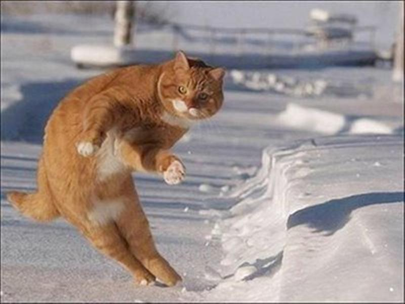
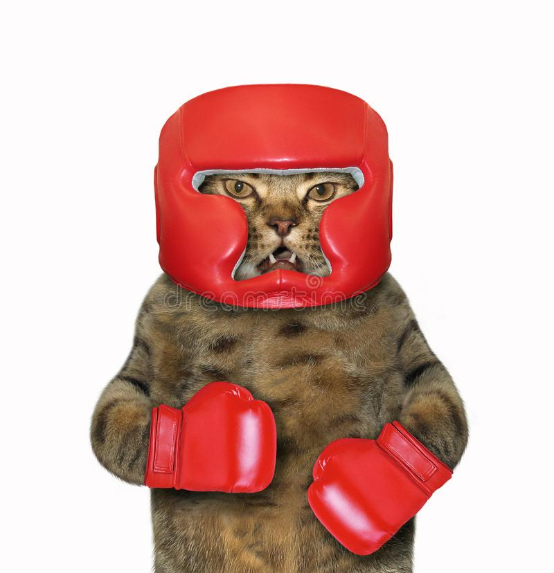

NTI Katthem
Om Oss
Våra katter
Har Du Funderingar?
Öppentider
Stöd Oss
Våra katter

Lilla Vektor har svårt att sitta still och är en väldigt energisk katt. Han passar bäst i en familj där han får chansen att röra på sig mycket och vara aktiv.

Dethär är Pelle, han är katthemmets äldsta katt på 10 år. Han kan ibland vara mer aggresiv och passar bäst i en familj utan barn.
Konrad är en lugn och rosam katt som älskar att ligga och bli kelad med samtidigt som han matas godis. Konrad passar perfekt med barnfamiljer.
Lisa är en väldigt klippsk katt som gillar att hitta på saker som ibland kan göra männikskorna upprörda. Lisa söker en trygg och tålamodig ägare.